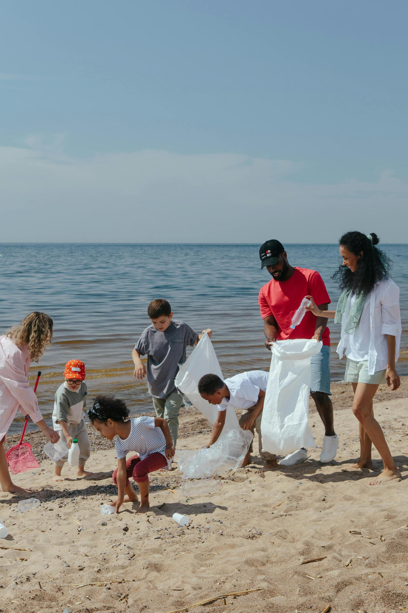

Voluntariado
Súmate a nuestro equipo de voluntarios y participa directamente en las jornadas de limpieza, monitoreo de especies y actividades educativas. No necesitas experiencia previa, solo ganas de ayudar.
- ✓ Capacitación gratuita
- ✓ Certificado de participación
- ✓ Conoce gente con tus mismos valores
- ✓ Experiencia práctica en conservación